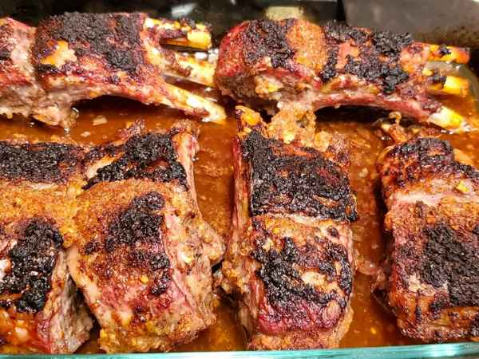

Lamb Ribs with Honey and Wine

Description
This lamb ribs recipe is a combination of Middle Eastern and European dishes. Best if served with steamed vegetables and hot cooked rice.
Ingredients
- 3 ½ pounds lamb ribs
- 2 onions, chopped
- 1 cup dry white wine
- ¼ cup soy sauce
- ¼ cup fresh lemon juice
- 1 tablespoon honey
- 1 tablespoon olive oil
- 2 teaspoons minced garlic
- 1 teaspoon ground cinnamon
- 1 teaspoon salt
- 1 teaspoon ground black pepper
Steps
- Place lamb ribs in a 9x13-inch baking dish.
- Combine onions, white wine, soy sauce, lemon juice, honey, olive oil, garlic, cinnamon, salt, and pepper in a medium bowl. Mix well, then pour mixture all over lamb. Cover the dish with plastic wrap and marinate in the refrigerator for 1 hour.
- Preheat the oven to 400 degrees F (200 degrees C).
- Remove the plastic wrap and roast lamb in the preheated oven until browned and tender, about 1 hour 10 minutes. An instant-read thermometer inserted into the center should read 130 degrees F (55 degrees C) for medium doneness.
Home